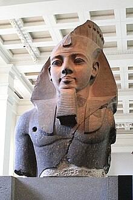
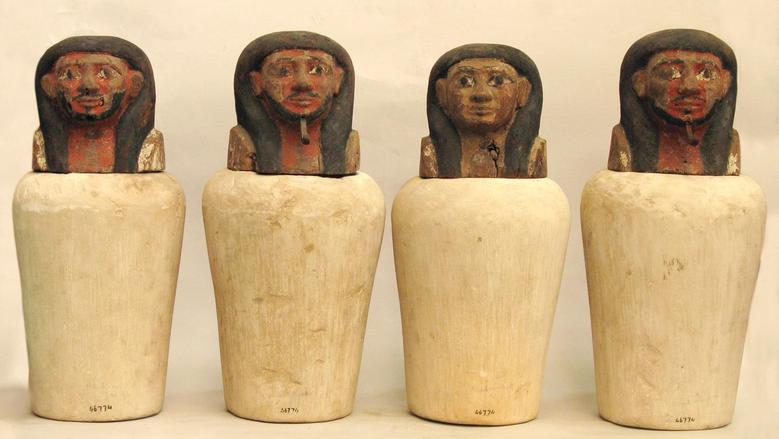
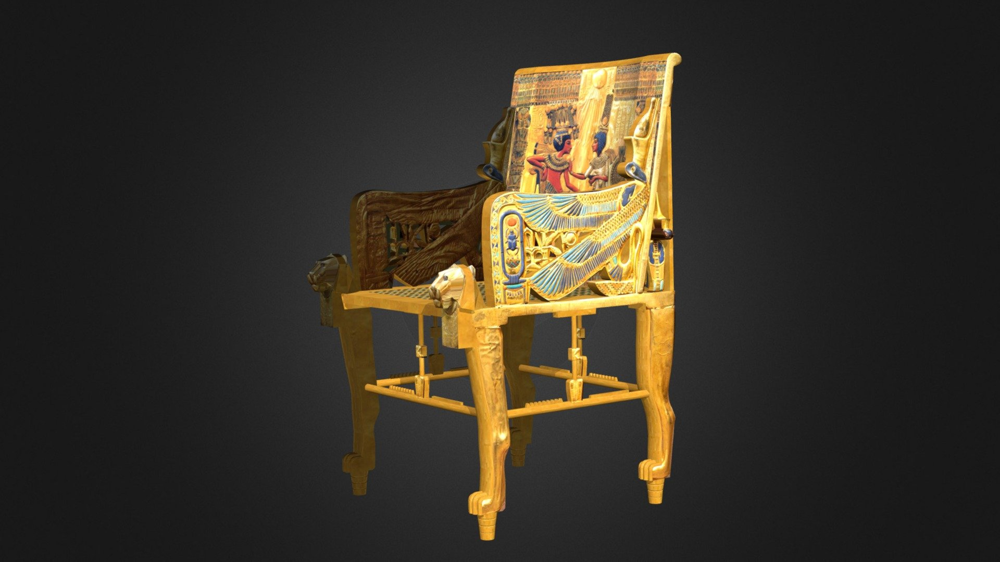
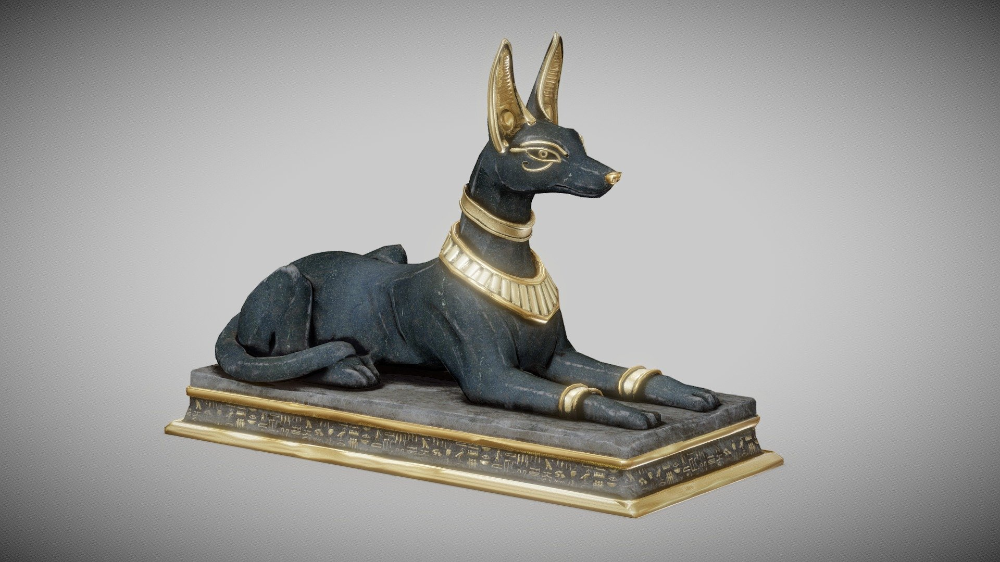

قناع توت عنخ آمون
أشهر القطع الفرعونية، مصنوع من الذهب الخالص، يعود للفرعون توت عنخ آمون.

تمثال رمسيس الثاني
تمثال ضخم يعكس قوة وعظمة الملك رمسيس الثاني، كان يُعرض سابقًا في ميدان رمسيس.

الأواني الكانوبية
تُستخدم لحفظ أحشاء المتوفى أثناء التحنيط، وغالبًا ما تُزين برؤوس الآلهة الأربعة.

مركب خوفو
سفينة شمسية خشبية تعود للملك خوفو، عُثر عليها بجانب الهرم الأكبر.

حجر رشيد
الحجر الذي فَكّ رموز اللغة المصرية القديمة، يحتوي على نصوص بثلاث لغات.

تمثال أنوبيس
إله التحنيط وحارس القبور، يُجسد بشكل ابن آوى، وكان يحمي المتوفى في العالم الآخر.